PRESIDENT
LEADERSHIP & GOVERNANCE
The executive leadership team steering the club's administration, operations, and service initiatives during Rotary Year 2025–26.
PRESIDENT
VICE-PRESIDENT

SECRETARY
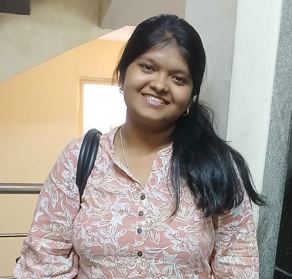
TREASURER

SERGEANT-AT-ARMS
EDITOR
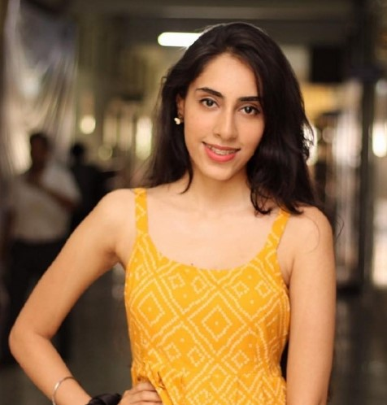
PUBLIC RELATIONS OFFICER

DIRECTOR – YOUTH SERVICE
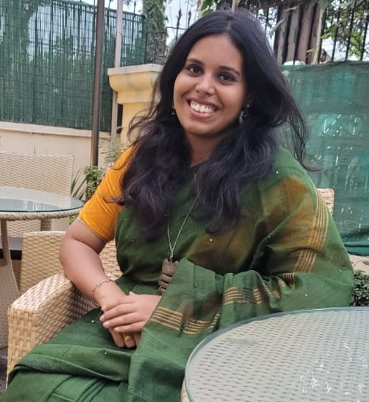
DIRECTOR – WOMEN EMPOWERMENT CELL

DIRECTOR – INTERNATIONAL SERVICE
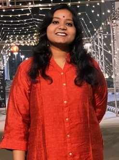
DIRECTOR – PROFESSIONAL DEVELOPMENT
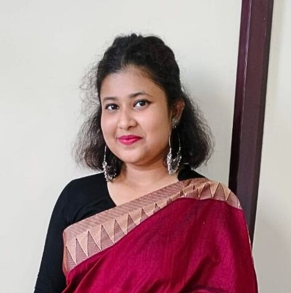
DIRECTOR – MEMBERSHIP

DIRECTOR – COMMUNITY SERVICE
GENERAL BODY
The passionate youth members whose active participation and dedication powered our initiatives throughout Rotary Year 2025–26.
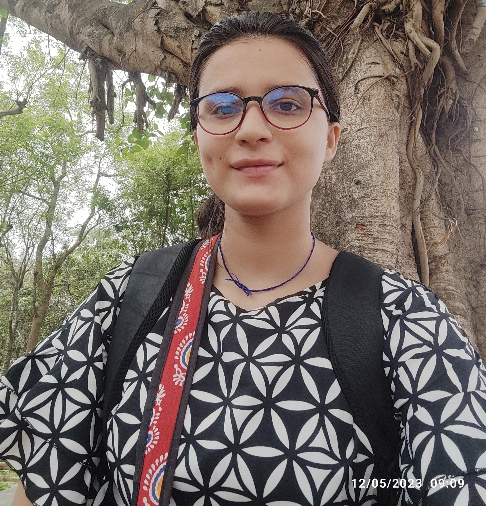
Member

Member

Member
COMMUNITY ENGAGEMENT
Youth leaders, campus contributors, and community volunteers who supported our projects on the ground during Rotary Year 2025–26.
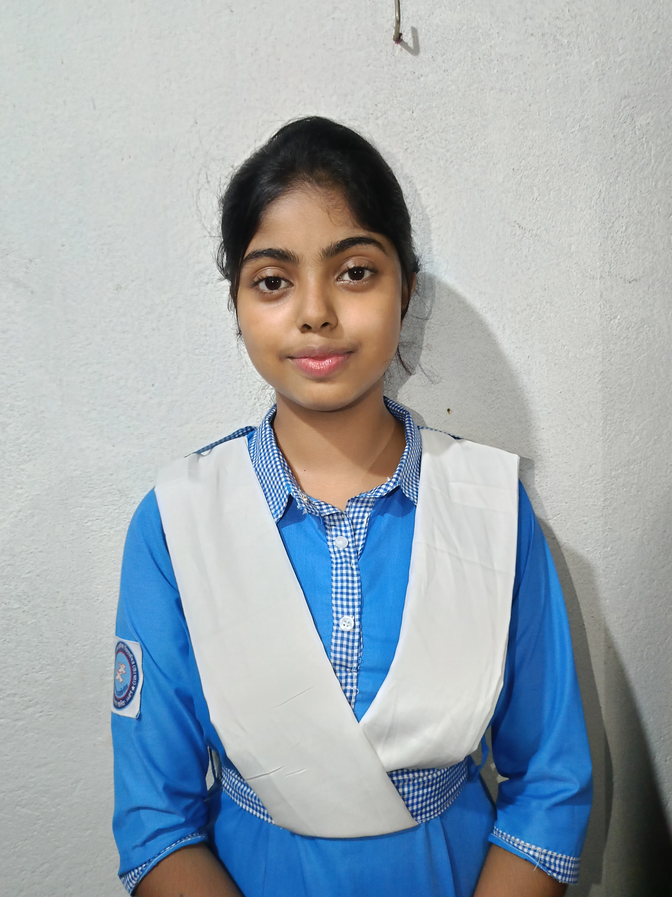
Volunteer
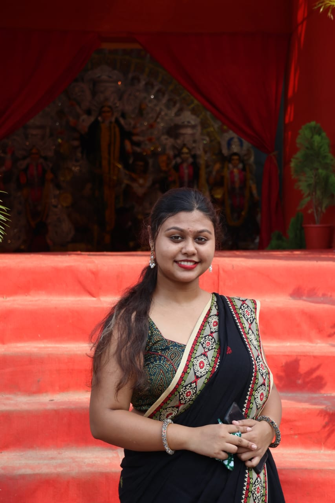
Volunteer
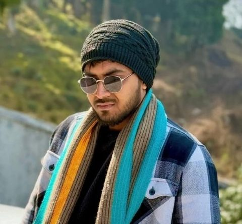
Volunteer
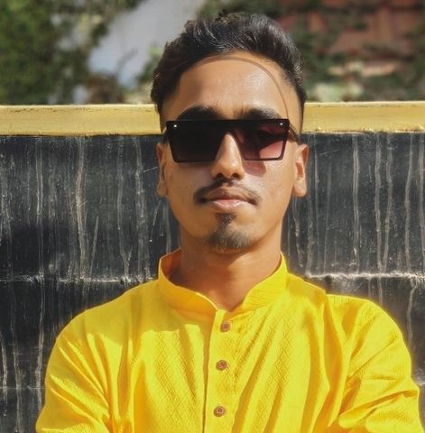
Volunteer
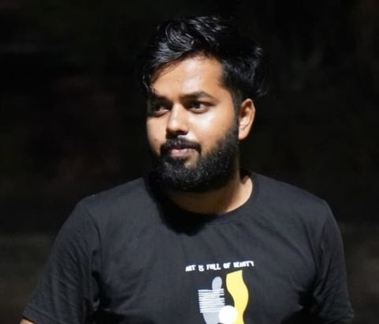
Volunteer
Volunteer
ROTARY CLUB OF DURGAPUR CENTRAL
Our mentors from the Rotary Club of Durgapur Central whose unwavering support, wisdom, and encouragement guided our club in Rotary Year 2025–26.
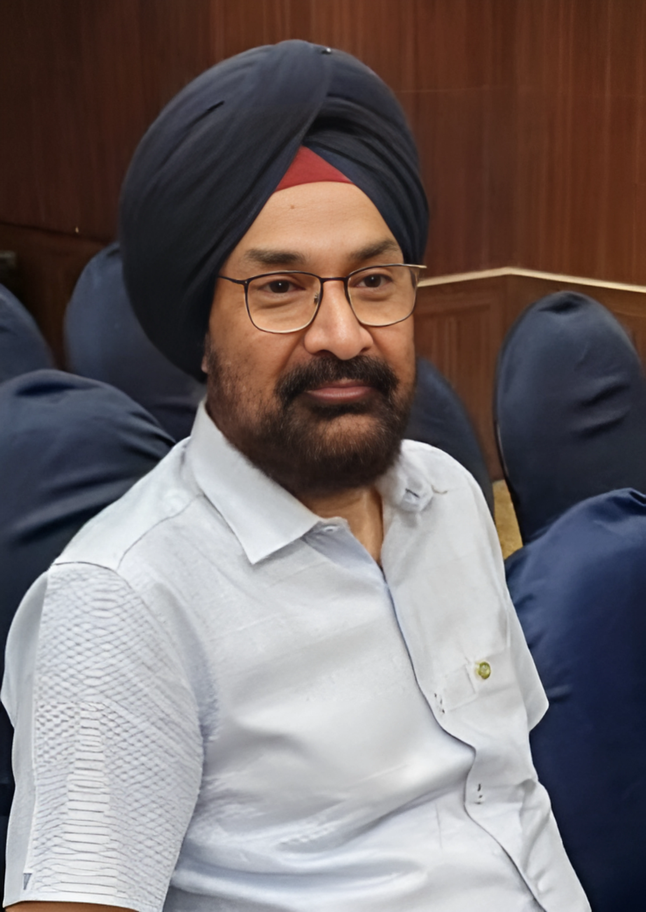
President
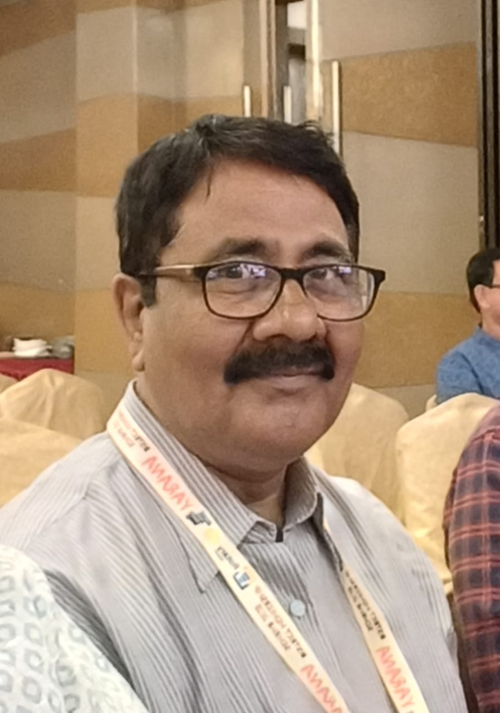
Secretary

Rotaract Committee Chairperson
SERVICE IN ACTION
The initiatives, community drives, professional workshops, and fellowship events executed during Rotary Year 2025–26.
Interactive visual breakdown of the 35 club initiatives and activities executed across Rotary's four foundational avenues. Hover or tap any slice or card to explore avenue shares.
Boier Desh literacy drives, Santa Elo Sohore, Mahadan blood donation & environmental initiatives.
3rd Club Installation, Aikyaam fellowship, District Conferences, Zonal summits & sports meets.
AI Prompt Engineering Workshop, EduBridge skill sessions, DOLS & PELS leadership seminars.
Nomadia 3240 Multi-District Youth Exchange, District Project Re-Flag & inter-city goodwill.
The 36th Rotaract District Installation, Symphony, was grandly hosted by the Rotaract Club of Malda Central in Malda. The milestone assembly brought together district leaders and passionate Rotaractors across RI District 3240, featuring inspiring ceremonial proceedings, leadership orientations, and a memorable cultural fellowship excursion to historic Gour Malda on Day 2.
The Rotary Club of Durgapur Central celebrated its 28th Club Installation ceremony at the Peerless Hotel in Durgapur. Our club members actively attended the momentous occasion, reaffirming strong intergenerational bonds with parent Rotarians, witnessing the leadership transition, and discussing collaborative humanitarian initiatives to be undertaken together across the upcoming Rotary year.
Secretary Rtr. Debarpito Sarkar visited the Rotary Club of Durgapur Central's regular meeting at Peerless Hotel for District Project Chalo Chale. He felicitated President Rtn. Mantaar Singh and IPP Rtn. Anuja Agarwal, presented Kolkata delicacies, showcased the club's awards from RY 2024-25, and introduced DRR Kumar Shivam Das's theme 'Sustainable Odyssey'.
The club hosted its 3rd Installation virtually with Chief Guest DRR Kumar Shivam Das and Guests of Honour Rtn. Mantaar Singh and Rtn. Santosh Maheshwari. Following the presidential collar exchange and oaths, President Rtr. Debarpan Mazumder unveiled the club theme 'Together we rise, Together we shine', formally introducing the incoming board.
Club members visited Universal Smile Children's Home in Anandapur to conduct a baseline survey for Project Boier Desh. Engaging with 31 resident children over snacks, members identified specific academic needs and learning aspirations. This comprehensive assessment laid the groundwork for structured weekly educational sessions held every Tuesday and Saturday.
For District Project Re-Flag, Secretary Debarpito Sarkar hand-crafted 25 national flags using recycled paper. On Independence Day, Vice-President Pratisruti Dutta organized a flag-hoisting ceremony at Ganga Brick Factory with Barrackpore BDO Mrs. Gargi Das as Chief Guest. Over 50 children celebrated together, receiving stationery, chocolates, and government-sponsored preparatory tuition.
Secretary Rtr. Debarpito Sarkar hosted DRR Kumar Shivam Das during his official Zone 1 visit to Durgapur alongside district officials. Following multi-club tours and a dinner hosted by Parent Rotary President Rtn. Mantaar Singh at Peerless Hotel, the DRR conducted a thorough documentation audit, concluding with fellowship at our club address.
The club organized an interactive English proficiency session for Class VIII to XII students at Universal Smile Children's Home in Anandapur. Rotaractors focused on strengthening grammatical fundamentals, sentence formation, reading comprehension, and spoken fluency. The interactive approach helped students overcome hesitation, boosting their communication confidence and addressing key school curriculum topics.
Targeting secondary and higher-secondary students of Class X to XII, this Boier Desh session at Universal Smile focused on Mathematics and Statistics. Club members Rtr. Saptick Das and Rtr. Hossain Rumaya simplified complex topics like Probability and Bayes' Theorem using intuitive real-world examples, providing dedicated academic problem-solving support for upcoming examinations.
Under the District Project EDU BRIDGE, the club conducted dedicated Spoken English and grammar workshops at Universal Smile Children's Home in Anandapur. Through guided dialogue, vocabulary-building exercises, and interactive reading, Rotaractors enhanced linguistic proficiency and self-expression, empowering underprivileged students with essential communication skills and confidence for their lifelong academic success.
Under District Project EDU BRIDGE: Skill for Me, our club organized a specialized musical vocational workshop for brick factory children in Naihati. Renowned vocalist Mr. Arkaprabha Mitra of 'Mitra Dal' mentored the students in rhythm fundamentals, vocal modulation, and melody appreciation, fostering artistic talent, disciplined creativity, and joyful personal development.
Aligned with District Project EDU BRIDGE, the club supported underprivileged children at Ganga Brick Factory by distributing 60 high-quality notebooks alongside essential stationery supplies. This ongoing initiative reinforced our club's continuous commitment to educational development, providing marginalized young learners with the essential materials necessary to sustain their daily schoolwork and studies.
Under District Project EDU BRIDGE, our club hosted a felicitation ceremony in Naihati honoring the renowned musical band 'Mitra Dal'. Lead vocalist Mr. Arkaprabha Mitra was felicitated for generously volunteering to mentor underprivileged children in vocal arts, celebrating their invaluable artistic contributions toward cultural enrichment and community youth empowerment.
Partnering with RAC Durgapur Central, we organized a literacy conclave on youth addiction and peer pressure at Rotary Club of Durgapur. Distinguished speakers Mr. Aditya Kumar Sinha and Rtn. Subrata Chattopadhyay addressed delegates from RAC DSMS and NSHM Knowledge Campus, presenting vital psychological insights and preventive educational strategies for youth.
Organized under District Project DreamWorks at Surya Narayan Complex in Naihati, Nobosristi was a waste-to-art exhibition empowering local women and unemployed youth. Featuring over 100 upcycled, handcrafted items including recycled bags, lamps, and home decor, the event generated direct artisan income and raised vital funding for our Boier Desh free education initiative.
As part of our Boier Desh initiative, we organized an impactful self-defense workshop for over 40 children at Ganga Brick Factory in Naihati. Expert martial arts instructor Mr. Arghya Das trained students in fundamental Karate blocks, body coordination, discipline, and personal safety awareness, establishing continuing free weekly training sessions.
Our club hosted 'AI Unlocked', an engaging professional development webinar on Google Meet led by Charter President Rtr. Sairath Das. The session demystified Prompt Engineering for beginners, showcasing live workflows on ChatGPT and Google Gemini while equipping participants with practical prompting strategies to boost productivity in academic and professional domains.
Held at the Institute of Engineers in Guwahati during Navasangam, the Rotaract District Assembly prepared future leaders for RY 2026-27. Led by DRRE Rtr. Pintu Sharma alongside DG Dr. Kameswar Singh Elangbam and DRR Kumar Shivam Das, the assembly unveiled the upcoming district theme, 'Serve with Heart, Lead with Purpose'.
Conducted during Navasangam at the Institute of Engineers Guwahati, this official learning seminar offered comprehensive leadership orientation for incoming district officials. Facilitated by IPDRR Rtn. Rtr. Aloka Dey with 20 council members present, the session detailed district portfolio responsibilities, inter-avenue synergy, and operational protocols for effective district administration in 2026-27.
Held during Navasangam in Guwahati, the President-Elect Learning Seminar prepared incoming club presidents for executive leadership aligned with Rotary International standards. Past District Governor Rtn. Prabhat Kedia facilitated the masterclass, where President-Elect Rtr. Pratisruti Dutta gained vital administrative guidance, governance insights, and strategic planning tools for her upcoming tenure.
Navasangam, the 36th Rotaract District Conference in Guwahati, united delegates across District 3240 for three vibrant days of fellowship and celebration. Featuring keynotes by DG Dr. Kameswar Singh Elangbam, cultural tributes, talent showcases, and the unanimous election of Rtr. Sayantan Debroy as DRR 2027-28, our delegation participated enthusiastically throughout.
To celebrate Christmas, the club organized 'Santa Elo Sohore' at Ganga Brick Factory for 50 underprivileged children. Featuring a cheerful Santa Claus, members distributed 50 insulated water bottles, food packages, and winter socks to protect against chilly temperatures. Zonal Secretary Rtr. Arkapravo Sengupta attended and supported the heartwarming community initiative.
Represented by President Rtr. Debarpan Mazumder and Vice-President Rtr. Pratisruti Dutta, our club attended Euphoria, the Zone 3 Zonal Conference in Agartala, hosted by RAC Agartala City. The two-day conference fostered vibrant inter-club fellowship, leadership training, and cross-zonal collaboration, expanding our club's network and partnership opportunities across RI District 3240.
Our club hosted an enriching inter-club fellowship meetup with the Rotaract Club of Agartala Nexus at City Centre 1 in Salt Lake, Kolkata. Vice-President Rtr. Pratisruti Dutta engaged with eight visiting Rotaractors over coffee, sharing administrative practices, reviewing impactful community initiatives, and establishing avenues for future joint district ventures.
The club coordinated an insightful Kolkata fellowship visit for District Rotaract Representative Elect Rtr. Pintu Sharma, touring Jorasanko Thakurbari, Victoria Memorial, and Park Street. Joined by District Director Rtr. Priyakshi Saha, Secretary Debarpito Sarkar and Vice-President Pratisruti Dutta engaged in detailed strategic dialogues regarding district goals and youth development.
Club members actively participated in Ethos 3240, a comprehensive district training symposium organized virtually via Google Meet under DRRE Rtr. Pintu Sharma. Esteemed Rotary leaders addressed core Rotaract values, the Four-Way Test, Rotary's Seven Areas of Focus, public image enhancement, and MDIO avenues, reinforcing principled leadership and organizational excellence.
Celebrating World Rotaract Week, our club completed four diverse impact initiatives across Kolkata and Naihati. Activities featured indigenous tree planting for ecological preservation, an animal welfare drive feeding street dogs, voluntary blood donation by Secretary Debarpito Sarkar, and a coordinated digital health campaign spreading awareness on Thalassemia and Cervical Cancer.
Our club delegation travelled to Durgapur to actively assist and participate in 'Prakritih', the prestigious District Environment Seminar. The conference featured keynote addresses by District Governor Dr. Kameswar Singh Elangbam and DGE Dr. Asim K. Adhikary, alongside insightful eco-friendly recycling exhibitions by Goonj promoting climate consciousness and community-driven ecological action.
Participating in Mahadan 11.0, the signature multi-district blood donation drive coordinated by District Director Rtr. Priyakshi Saha, Secretary Debarpito Sarkar donated one unit of AB+ blood at the Central Blood Bank in Maniktala. This selfless humanitarian contribution supported critical regional patient reserves, directly helping to save up to three lives.
Serving as official Host Club for Nomadia 3240 MDYE, our club hosted Rtr. Anoop Singh Bedi, President of RAC Avyanna Roorkee. The 5-day exchange encompassed historic heritage tours across Naihati and Bandel, cultural immersion, an underwater metro ride, and a 70-packet food distribution at Boier Desh, earning us district-level hosting recognition.
Club members and volunteers gathered at Kolkata's historic Indian Coffee House on College Street for the Aikyaam Fellowship Meetup under Club Service. Over traditional coffee and famous cutlets, members discussed future leadership roadmaps, upcoming community projects, and shared district collaborations in an atmosphere of warmth, solidarity, and enduring Rotaract camaraderie.
At The Synergy virtual Zone 1 Conference, our club achieved exceptional acclaim for its administrative diligence and leadership. The club earned three prestigious awards: Best Club Bulletin Award, Star Rotaractor for Vice-President Rtr. Pratisruti Dutta, and Best Secretary Award for Rtr. Debarpito Sarkar, celebrating our club's yearlong dedication to excellence.
Secretary Rtr. Debarpito Sarkar represented the club at the Upohar Zone 5 Conference and Awards held at Hotel Jahnabi Regency in Bongaigaon, Assam. Convening over 80 Rotaractors across the region, the assembly celebrated outstanding service initiatives, enriched zonal fellowship, and offered valuable insights into best district-level operational standards and recognitions.
At the Upohar District Awards in Bongaigaon, our club achieved unprecedented district recognition under DRR Kumar Shivam Das. Major accolades included the Sustainable Odyssey Gold Citation, Echelon Project Award for Boier Desh, Nomadia Hosting Award, Presidential Award for Debarpan Mazumder, and Keystone Best Secretary Honor awarded to Rtr. Debarpito Sarkar.
Co-hosted alongside RAC DSMS College and RAC Raniganj Institute of Information Technology at Rotary Club of Raniganj, Elevate 3240 served as an inspiring district assembly. Esteemed keynote speakers PDRR Rtn. Diptendu Mustafee, PDRR Jagdish Jhunjhunwala, and Assistant Governor Rtn. Smith Jhunjhunwala delivered impactful sessions on youth leadership, continuity, and vision.
WEBSITE & DIGITAL PRESENCE
Conceptualised, designed and developed the official digital presence of Rotaract Club of Durgapur Central Presidency.
WEBSITE UPDATES
Introduced interactive animated Avenue Pie Charts across Our Efforts (RY 2026–27), RY 2025–26, and RY 2024–25—featuring dynamic SVG sweep animations, live metric counters, morphing center statistics, and seamless avenue filtering.
17th October 2026Added Rotary Year 2024–25 archive page under Our Records covering past leadership, members, volunteers and parent Rotarians, complete with an interactive photo gallery and 36 project chronicles.
17th October 2026Foundational Charter Year 2023–24 records to be added soon under Our Records—showcasing our charter leadership, founding members, grassroots milestones, and photo memories.
Upcoming ReleaseAdded Rotary Year 2025–26 archive page under Our Records covering past leadership, members, volunteers and parent Rotarians.
12th October 2026